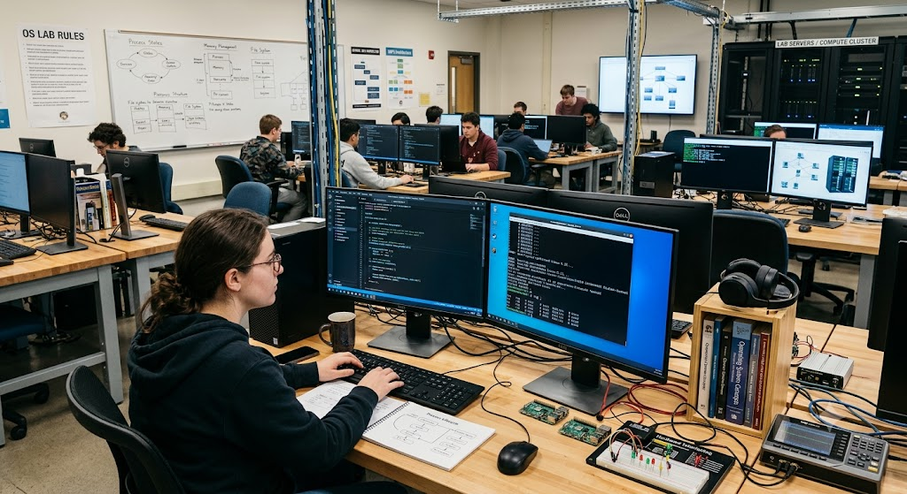
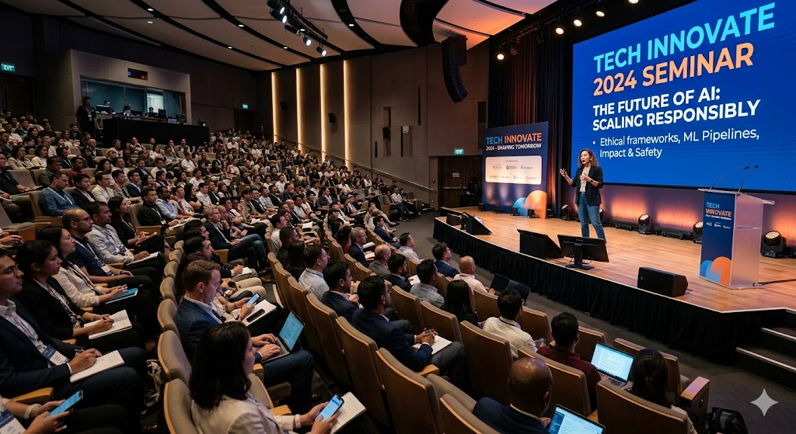

RAMZAN
Operational Dashboard
Welcome to the central command node of my cyber learning space.
Identity Profile
I am a Computer Science and Engineering (CSE) student specializing in network defense, infrastructure security, and full-stack web architectures.
My academic and independent research covers deep dives into OSI layer vulnerabilities, variable length subnet masking (VLSM), routing protocol configuration, and automation script development in Python.
Development Timeline
B.Sc. in Computer Science & Engineering
OngoingFocusing on Core Data Structures, Advanced Algorithms, Computer Networks, and Information Security Protocols.
Independent Cybersecurity Researcher
2024 - PresentConducting simulated penetration testing labs, vulnerability assessment setups, and active subnet analysis using custom scripts.
Verified Certifications
Introduction to Cybersecurity
Cisco Networking Academy
Routing and Switching Fundamentals
Lab-verified Training
Interactive Core Shell
Type commands like help, about, skills, projects, education, whoami, contact, or clear.
System Initialized. Type help to view available system commands.
Automated Node Diagnostics
Run a structural threat analysis assessment on the current browser runtime.
Tech Stack Expertise
Cybersecurity & Networking
Software & Web Architecture
Threat Vector & Development Toolkit
Deployed Repositories
Network Subnetting Tool
An interactive JavaScript-based VLSM calculator to dynamically divide IP addresses into subnets based on host requirements.
View RepositoryAutomated Ubuntu Setup Script
Bash and Python script blueprints utilized during VM deployment labs to instantly secure and update server setups.
View BlueprintsCentral Ledger Statistics
GitHub Repository Sync Status: Operational
Media Center


Central Lab Logs
Store dynamic diagnostic text logs, notes, or research findings in local runtime memory.